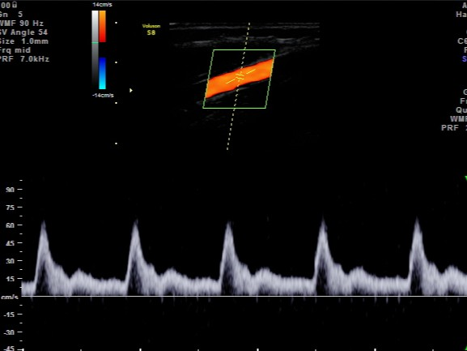
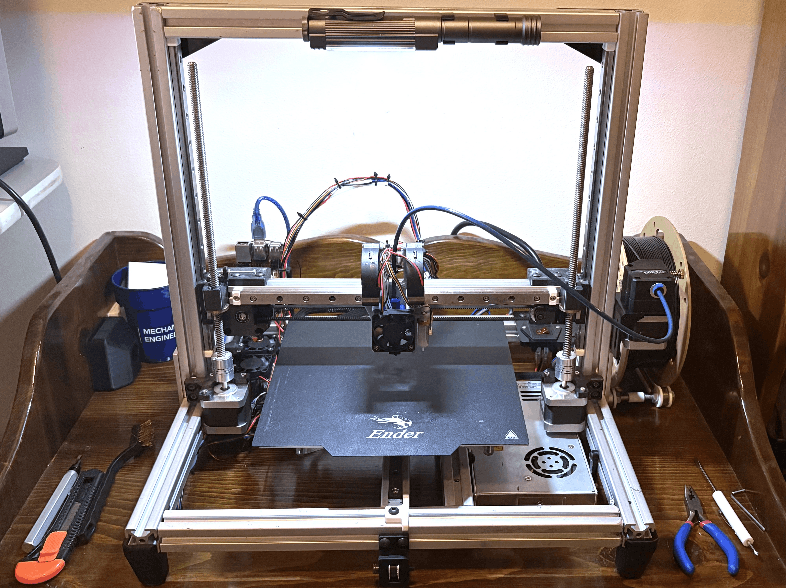
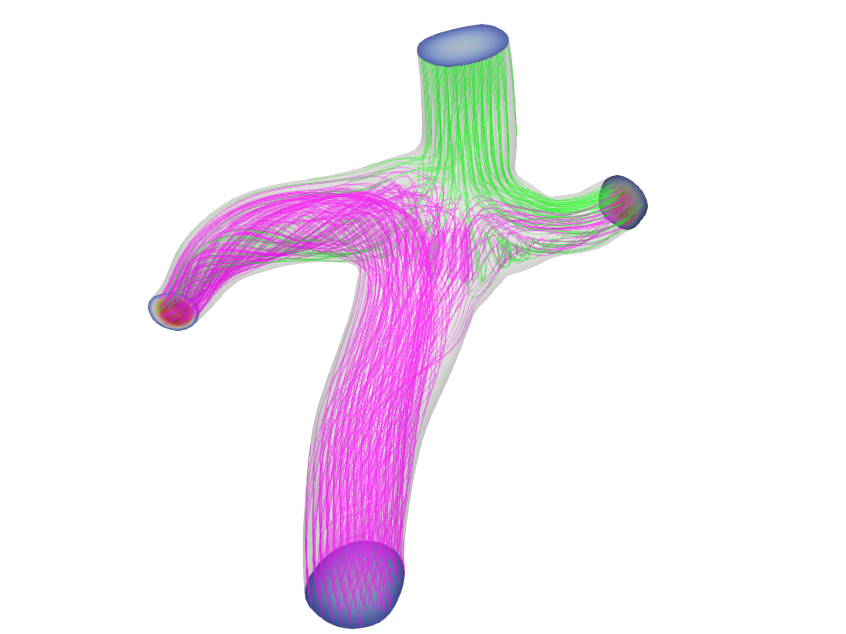
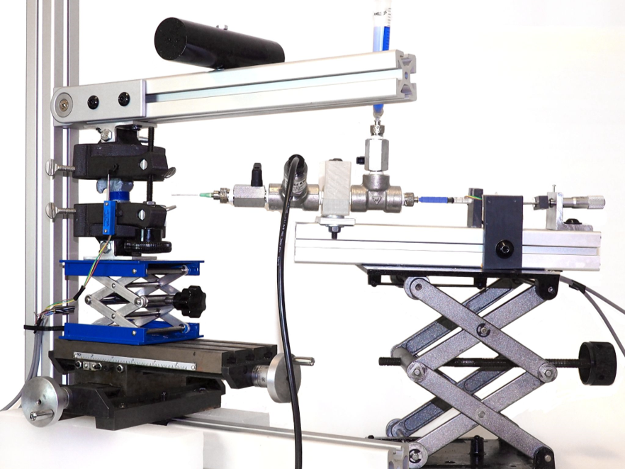
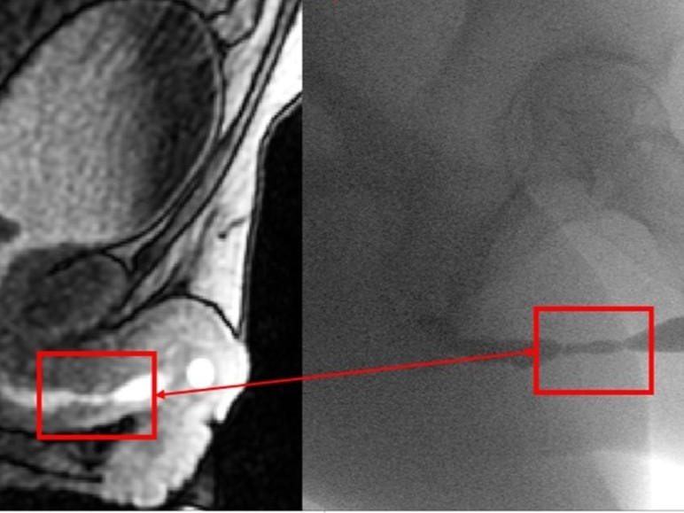
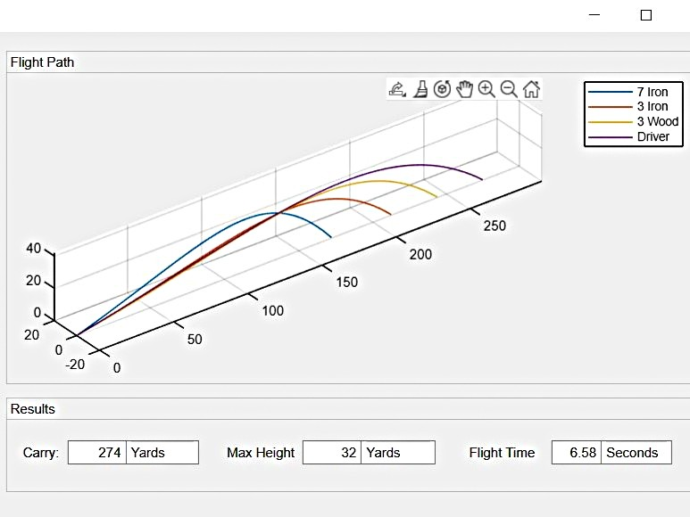
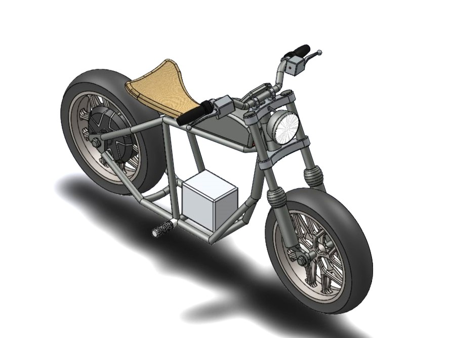

Brachial Artery Flow Simulation (M.S. Thesis)
Assessing postpartum risk using ultrasound-derived CFD
I'm a Mechanical Engineering M.S. student at the University of Wisconsin - Madison, interested in using mechanical design and computational modeling to build new clinical tools. I have an extensive background in hardware development, particularly with rapid prototyping, devloping new instrumentation, and building simulation pipelines (with a focus in fluid dynamics). Beyond academic research, I love to golf, play hockey, lift weights, and tinker with my own personal projects.

Assessing postpartum risk using ultrasound-derived CFD

Cartesian printer designed from scratch

Evaluating hemodynamics of potential surgical treatment options

Biomechanical testing and fixture design

Using non-invasive methods to characterize blockage degree
Converting images into 3D printable lithophanes

Assorted MATLAB projects

Assorted SolidWorks modeling projects